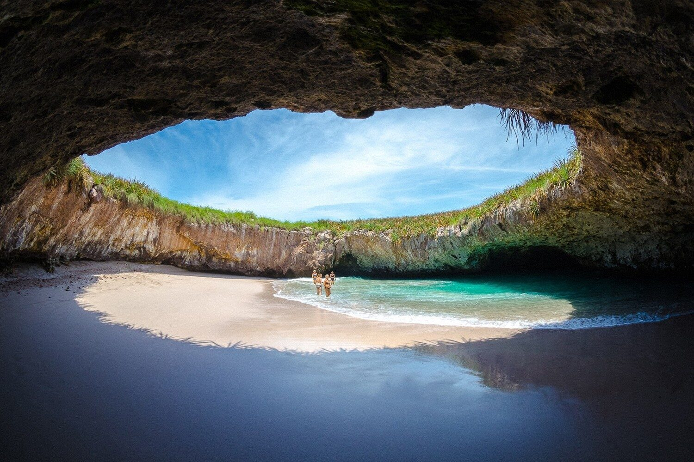

El Pescado Zarandeado remonta su origen a
épocas prehispánicas, más específicamente, de la isla de
Mexcaltitán en Nayarit
Se sirve el pescado acompañado de pepino, jitomate,
cebolla, frijoles y una deliciosa salsa picante con
tortillas
La isla alberga más de 10 especies distintas de flora, y más de 15 especies de fauna, tanto marina como silvestre, además, es hogar de varias especies endémicas como la iguana espinosa Mexicana (Ctenosaura pectinata), el Mulato azul (Melanotis caerulescens), entre otras que se enlistarán más adelante

Notas relevantes:
Aunque es posible que hayas oído
hablar del poeta y escritor Amado Nervo, es posible que no
sepas que Tepic es su lugar de nacimiento. Nervo es uno de
los poetas más influyentes en la literatura mexicana, y se
le conoce por su poesía romántica y su prosa lírica. Al
visitar Tepic, podrás conocer más sobre la vida y obra de
este gran escritor.
Si eres un amante de la historia, el Museo Regional de
Nayarit es un lugar que no debes perderte en Tepic. Este
museo cuenta con una impresionante colección de arte
prehispánico de la región de Nayarit, que incluye
estatuas de cerámica, joyas y utensilios antiguos.
También hay una sección dedicada a la historia de la
región, desde la época prehispánica hasta la actualidad.